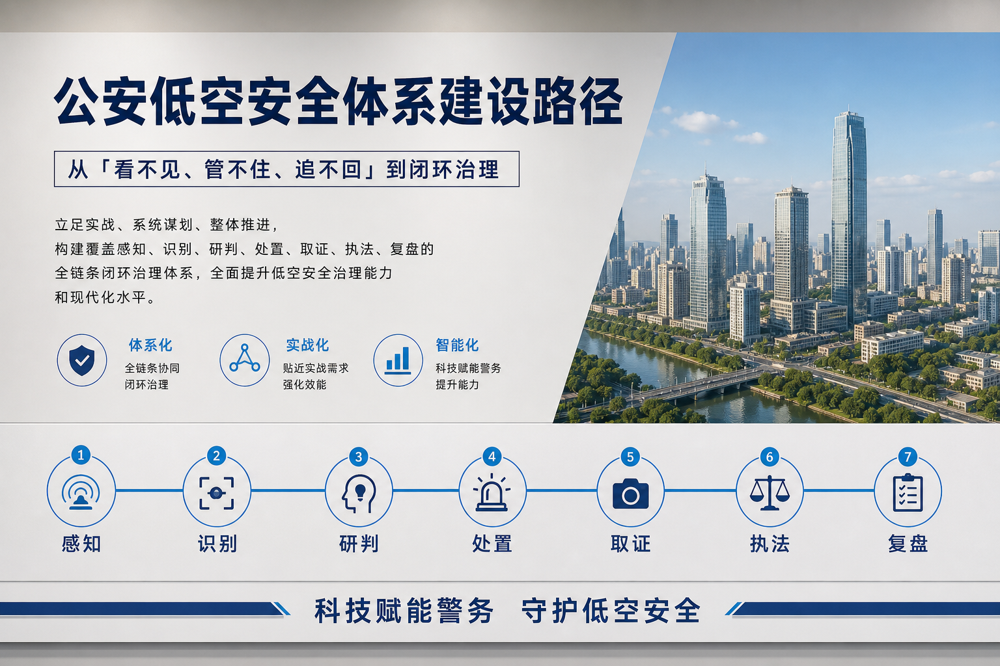
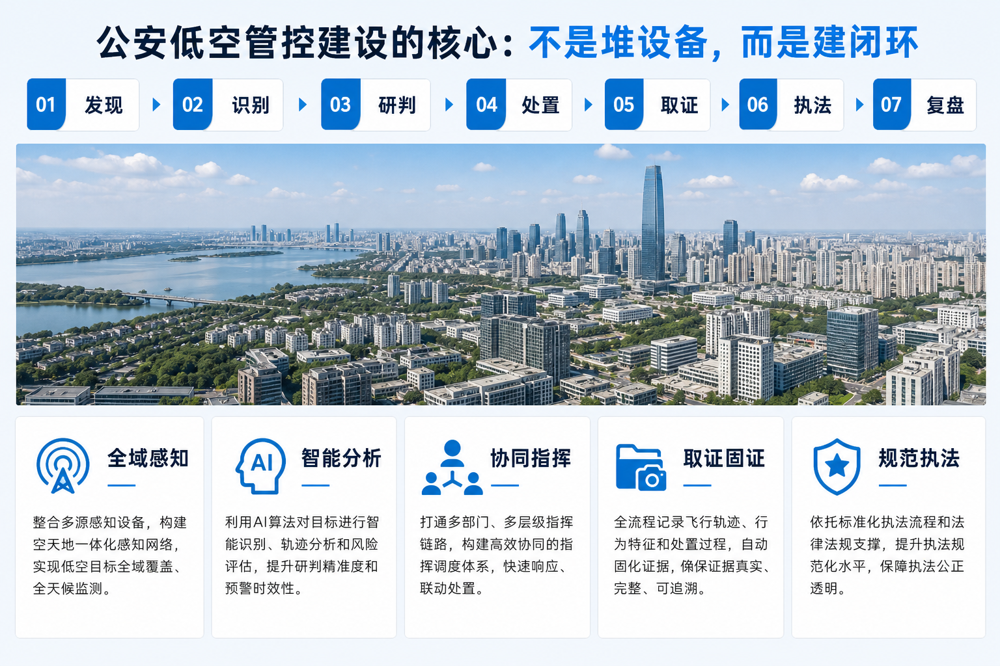
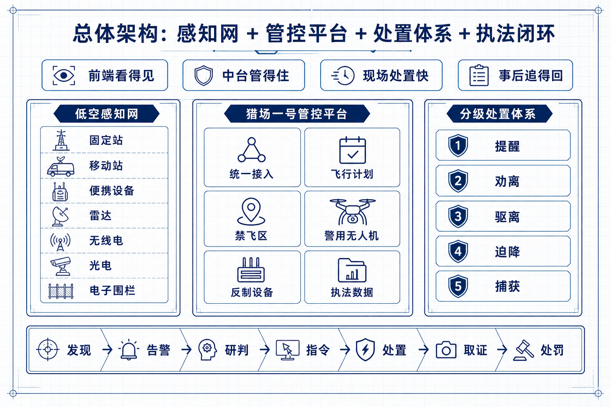
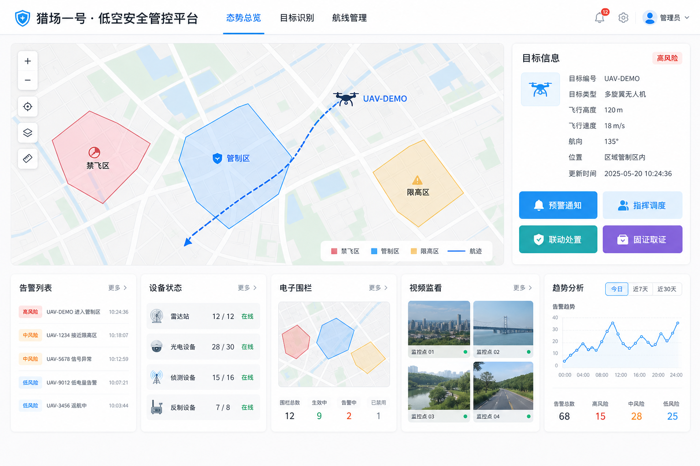
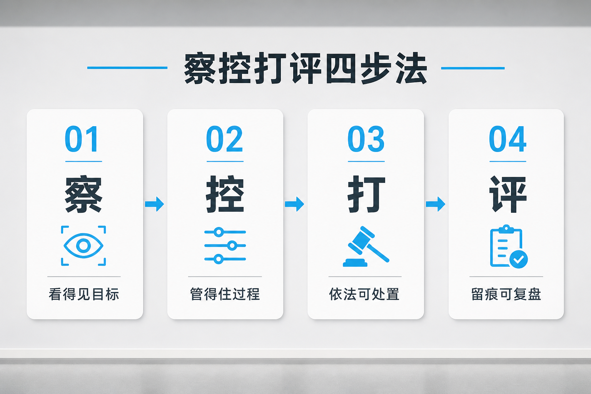

导读 本文面向公安、特巡警与城市低空治理条线读者，以昆明市公安局特巡警支队警务航空大队「云鹰」公开报道为样本，拆开「重翼直升机 + 轻翼无人机 + 低空警务指挥中心」怎样拼成一条可对表的建设路径。文中事实均来自公开报道，不涉及未披露的部署点位与反制技术参数。
导语：低空平安，先问有没有「翅膀」，再问翅膀听不听指挥
云南多山地、沟壑深，地面警力未必总能第一时间抵达。无人机一普及，「黑飞」、误闯管制空域又叠上来。只靠临时加几台设备，撑得过一场活动，撑不住日常季节与重大活动交替出现的压力。
昆明给出的公开答案，叫「云鹰」。一边是警用直升机，管重大险情与空地快处；一边是无人机与管控平台，管日常巡护、监测与规范引导。两边都挂在低空警务指挥中心里。读完公开材料，最清楚的一点是：低空治理要的是闭环，单靠多几架会飞的机器不够。
一 为何必须建：高原城市里的空中时间差
群山阻隔，地面路程被拉长。公开报道写得很直白：在云南许多区域，地面警力难以快速抵达。低空一旦出事，时间差本身就是风险。传统办法往往分两头。一头靠路面拉练和增援，路程被地形吃掉；一头靠临时租机或活动前突击布防，活动结束能力就散。两头都解决不了「平时谁值守、急时谁联勤、事后谁复盘」。
2024年11月底，北市区突发警情。空地联勤快处机制启动后，机务检查设备，飞行员研判航线，指挥室敲定地面接驳点。航线约5分钟获批，53011号直升机起飞，奔赴滇池警务营区转运「云豹」突击队。从落地接人到抵达现场，全程约13分钟。这个数字不神秘。它说明空中通道已经接进日常处警流程；也说明直升机能嵌入联勤链条，而不是停在展示清单里。
另一边，无人机普及让「谁在飞」变成日常题。黑飞、违规闯入管制空域，和群众航拍、活动保障挤在同一片低空。只禁不疏，矛盾会堆到基层；只疏不监，重点区域又守不住。昆明的公开表述把目标写成两句：守住空域安全底线，兼顾群众飞行需求。后一句很要紧。它决定建设不能停在「发现了就处置」，还得有登记、宣导、劝导与平台留痕。
对其他城市，这一节的建设含义很具体。先算清本地「空中时间差」出现在哪些场景：山区搜救、河湖巡防、重大活动外围、主城突发警情。再问现有力量是常设大队，还是每次靠临时调用。算不清时间差，后面买什么设备都会飘。
也可以把问题写成一张表。横轴是场景，纵轴是「地面最快抵达」「空中最快抵达」「谁有权调机」「谁负责复盘」。格子填空越多，说明低空能力还停在口号。昆明样本的价值，是至少有一格被真实警情跑通了：空地联勤、分钟级批复、突击力量空中投送。

低空平安要的是闭环，单靠多几架会飞的机器不够
二 目标重塑：一重一轻，听同一个指挥
「云鹰」的总体架构，可以概括成三块。三块要同时立项，也要同时听指挥。
重翼：警用直升机。公开材料显示，2011年3月28日「警航一号」首飞，实现云南警用航空零的突破；队伍从租借航空器、外部支援，走到两架AC311警用直升机列装，专业人才梯队逐步成型。当前接令可快速升空，主城区约6至10分钟可抵达，市辖区大部分区域约30分钟内可实现空中支援。警用直升机累计安全飞行8400余架次，报道称保持安全飞行零事故、零失误。十五年从「借翅膀」到「有建制」，中间堆的是机务、飞行员、科目与联勤脚本，不是一次采购单。
轻翼：无人机与适配改装。高原强风、雨雾、密林，不少制式机不好用。公开报道写，队员自学三维建模、3D打印零部件，改出可挂宣传横幅、可搭热成像搜索的机型；加装网捕装置的「网兜无人机」获发明专利，能力方向是空中拦截捕获违规飞行器。这里只写公开能力表述，不展开任何技术参数。轻翼的关键不在「奇技」，在于日常巡护装得进勤务表：汛期巡河、山林搜寻、空中投送、规范宣传，都能派得出去。
中枢：低空警务指挥中心 + 无人机管控平台。培育200余名持证专业飞手，打造「天枢、驭风、猎空」三大功能模块，公开口径是侦测预警、空中处置、指挥调度一体化。截至2026年6月，累计监测无人机飞行21.6万余架次，登记飞行器3.5万架、持证飞手3.1万人；并保障COP15、GMS、南博会等重大活动，报道称重点区域零扰飞。
重的管大情，轻的管日常，中枢管闭环。缺一块，低空就还是「各飞各的」。
三块对齐以后，组织关系也要写清。重翼、轻翼若分属不同单位，中枢又只是「协调会」，战时会抢频率、平时会推责任。公开样本把它们收在同一警航叙事里，读者看到的是一个大队、一套指挥、两类翅膀。其他城市若短期做不到编制合一，至少要做到任务合一：同一张态势图、同一套调令、同一份复盘。

重翼、轻翼、中枢：三块缺一，指挥就断
三 核心能力之一：把空中时间写进修程
直升机这条线，公开样本最硬的是「时间」与「科目」。
大队持续以战促训，打磨形成128项实战模拟科目。队员坦言，更希望战机备而不用——不起飞，意味着没有险情、群众平安。这句话适合写进建设目标：空中力量的价值，首先是可调用、可抵达、可联勤，其次才是出勤次数好看。把「不起飞」写成成功指标，比把「飞了多少架次」写成唯一KPI更接近实战。
建设对表时，不妨问四句。航线批复能不能进分钟级？地面接驳点有没有预置？突击力量与机务、飞行员是不是同一套联勤脚本？主城区与市辖区的时间承诺，有没有演练数据托着？昆明公开材料给出的是「6至10分钟 / 约30分钟」区间，以及8400余架次的累计安全飞行。其他城市不必抄机型清单，但要抄「时间写进修程」这件事。
空中执勤风险也写进了公开叙事。一次执勤途中，飞行员发现空域漂浮风筝，旋翼触线风险极高，及时调整航向规避。它提醒建设者：低空安全不只管无人机，也管空飘物与临时障碍。指挥中心若只能看见无人机，看不见这类干扰，重翼再快也会踩空。感知口径要覆盖「影响飞行安全的空中物」，不能窄成「只盯黑飞无人机」。
重翼建设还有一笔容易漏掉的账：人才与机务。公开材料回溯了从外部支援到自有梯队的过程。没有机务与飞行员的稳定编制，直升机再先进也只是停机坪上的固定资产。对表时建议把「人员持证、值班、复训、联勤演练」和「航空器列装」写进同一张建设表，分年推进，避免先买机后等人。

时间写进修程，空中力量才算接进联勤
四 核心能力之二：轻翼日常化 + 平台模块化
无人机这条线，解决的是「天天都在发生」的事。山林搜救、汛期巡防、空中投送、重点区域监测，公开报道把日常巡护交给轻翼。平台侧的「天枢、驭风、猎空」，按公开表述分别托住数字管控、应急与侦测等任务组合，目标是侦测预警、处置与指挥调度串在一起。
对其他城市，模块叫什么名字不重要。重要的是三件事有没有分开立项又合到一张图上。
第一，看得见。监测架次要能累计、能复盘。昆明公开到2026年6月的21.6万余架次，说明平台不是演示页，是在记账。账记得住，专项整治才有证据链，日常预警才有阈值。
第二，调得动。200余名持证飞手，是轻翼能力的人力底座。有机无人，等于把设备停在库房里。飞手还要进值班表，不能只存在于培训结业名单。
第三，处得完。公开材料提到空中拦截捕获等处置方向，同时强调指挥调度一体化。建设启示应写成「察得到、调得动、处得完、留得下痕」，单买某一类前端设备解决不了闭环。业内常说的「察 · 控 · 打 · 评」，落在这里很具体：先察清目标与空域态势，再控住流程与权限，处置按规程执行，事后用数据复盘。不必先上复杂装备清单，先把指挥中枢与日常勤务接上。
重大活动保障是检验场。COP15、GMS、南博会等节点，报道称重点区域零扰飞。活动保障与日常监测若两套人马、两套系统，活动一结束能力就散。云鹰样本的价值，是把活动能力沉淀进常设大队与常设平台。建设验收时可以追问：活动临时编成的人员与设备，活动后有没有回到常设编制与常设平台？回得去，才算能力沉淀；回不去，明年还得重新堆一次。
高原适配也值得单独写进路径。公开报道强调制式机不适配时，队伍自己改、自己打样、自己试。这不等于每个城市都要搞发明专利。它等于承认：轻翼清单必须按本地风、雾、林、河来选型和改装，不能只按采购目录勾选。选型阶段把「勤务场景」写清楚，比事后抱怨不好用成本低。
平台建设还要防两种假繁荣。一种是大屏好看、值班无人，监测数据不进处置单。另一种是处置很忙、台账很乱，下次专项来了又从零找证据。21.6万余架次之所以有说服力，是因为它能被累计；若只有活动期间的截图，说明平台还没进日常。

看得见、调得动、处得完，才算平台进了实战
五 有温度的管控：登记、宣导与尺度
低空监管不能简单一禁了之。公开报道写，蓝花楹盛放时节，教场中路游客想航拍花海，却不熟空域规定。执勤民警现场宣讲规范，指导完成实名登记，对误入管制空域人员优先劝导警示。大队还打造「云小鹰」宣传IP，用短视频与图文普及飞行法规。
截至2025年底，平台登记飞手5000余名，备案民用、商用无人机近9000架。这组数字和前面「3.1万持证飞手 / 3.5万飞行器」口径不同，公开材料里分别出现，成稿宜分场景引用：前者偏平台侧备案与宣导结果，后者偏监测与登记体量的更大口径。对建设者更有用的是逻辑——合规入口要好走，违法出口才硬得起来。
分步路径可以很土，但管用。
• 第一步，建队与建时。明确重翼联勤时间承诺，把科目与接驳写进手册。
• 第二步，建平台与飞手。监测、预警、调度进同一中枢；飞手持证与值班制度同步。
• 第三步，建规范入口。实名登记、现场宣导、活动前告知，减少「不懂法就违法」。
• 第四步，建复盘。监测架次、保障结果、劝导与查处结构，按季度回看，改航线与改勤务，少改新闻稿、多改流程。
常见误区也有三条。只买直升机，不建联勤，重翼会变成稀缺表演。只堆无人机，不建指挥中心，轻翼会变成各自为战。只搞专项整治，不做登记宣导，矛盾会在下一个花季、下一场演唱会原样回来。
还有一个容易被采购流程忽略的点：宣导与执法要同口径。现场民警讲的规范，和平台登记要求、处罚依据若对不上，群众会觉得「怎么说都有理」。云小鹰一类IP的价值，是把口径说成普通人听得懂的话，降低一线解释成本。
把宣导写进建设预算，听起来「不硬」，却常决定专项能不能收场。花季、演唱会、展会前一周，若能把禁限飞提示、登记入口、咨询电话送到游客手机里，现场冲突会少一截。少一截冲突，就是少一截占用处警资源。

察得到、调得动、处得完、留得下痕
六 结语：翅膀要听指挥，低空才算管住
昆明「云鹰」公开样本，没有把低空治理写成单一设备采购单。它写成一支能升空的队伍、一个能记账的平台、一套能联勤的时间，外加一条愿意把群众飞行需求接进规范入口的宣导线。
13分钟，是重翼写进修程的证据。21.6万余架次，是轻翼与平台在日常里干过活的证据。5000余名平台登记飞手、近9000架备案无人机，是「有温度管控」留下的痕迹。8400余架次安全飞行与128项科目，则提醒建设者：空中力量靠复训和联勤养活，靠清单堆不出来。
对订阅号读者，不妨留三句对表。本地有没有「重情轻常」的力量分工？低空指挥中枢能不能同时看见勤务与监测？合规登记好不好走？三句答得清，低空平安才更像建设，也更像能复制的路径。愿意的话，还可以加第四句：上次重大活动临时拉起的人员与设备，活动后回到常设编制了没有？这句专门用来验「能力有没有沉淀」。
飞得开，还要管得住。管得住，先要指挥链不断、数据链不断、宣导链不断。城市低空越热闹，这三条链越不能靠临时专班硬撑。常设队伍、常设平台、常设宣导，才是「云鹰」样本里真正可搬家的东西。设备可以按年采购，这三条链要按年养着，断一年，明年活动场上又会重新手忙脚乱。
信息来源与出处
昆明信息港 / 新浪新闻：《云岭长空有警翼 昆明「云鹰」守护城市低空平安》，2026-08-04／昆明信息港相关报道：《起飞！寻找平安春城「新解法」》等（2026-08-03～05，交叉核验）／公开转载特写：《开飞机的昆明警察，每天都做些什么？》（细节交叉，以昆明信息港通稿为准）
—— 关于我们 ——
羽嘉科技，城市级低空安全解决方案提供商，「猎场一号」警用低空防务智能实战平台研发者。
让低空管理从「被动应对」转向「主动防控」。
免责声明：本文相关信息引自公开渠道（信源见文中标注），仅供行业交流参考，不构成任何决策依据。如有侵权请联系删除。